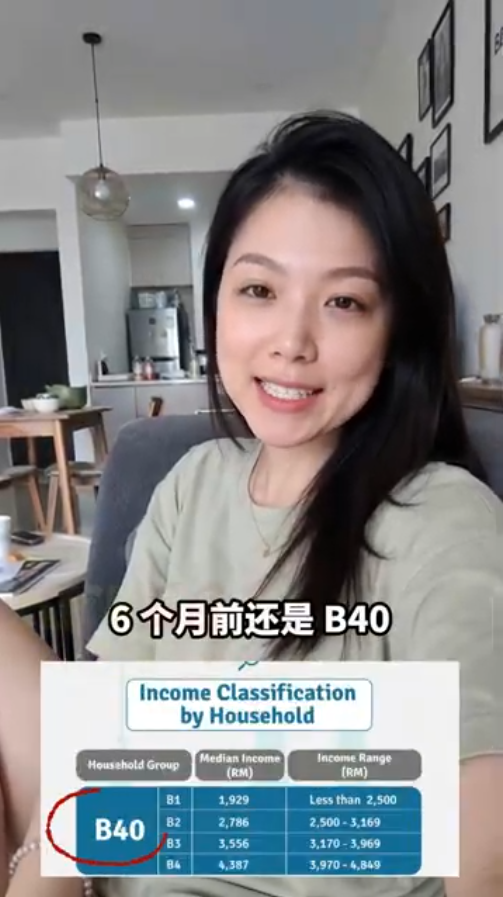
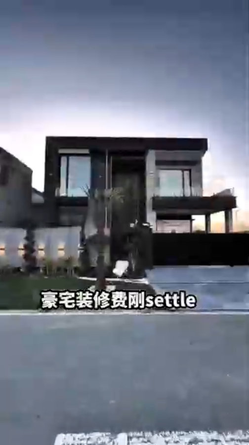

从 B40 到梦想之家：一个简单的决定如何在短短6个月改变我的人生

我们都经历过——深夜盯着天花板，看着账单像无情的潮水般不断堆积。就在不久前，那就是我真实的生活写照。我发现自己被归类在 B40 收入群体，被经济压力压得喘不过气，为日常开销焦虑不安，感觉自己被困在一片看不到尽头的黑暗里。当你环顾四周，觉得别人都在向前迈进，而你却只是勉强让自己不被淹没时，那种压力真的很沉重。
但如果说这几年我学到了一件事，那就是：你现在的处境，不是你最终的归宿。
改变一切的那个火花
转折点不是来自一次好运，也不是中了彩票。它来自与一位老朋友的一次闲聊，那位朋友当时的生活正在步步高升。当他告诉我，他作为 TikTok 推广伙伴 (promotion partner) 赚取一份稳定的额外收入时，我心里燃起了一丝希望的火花。我心想：如果他能做到，为什么我不可以？
我决定放手一搏，尝试一条全新的道路。
小步伐，带来巨大成果
刚开始的时候，收入并不多。中间有学习曲线，也需要坚持。但很快，那些小小的收入涓涓细流开始慢慢汇聚。每一个小小的成功，都在重新拼凑我早已破碎的自信。

快转到 6 个月后，我的生活已经彻底变了样。我不仅摆脱了 B40 群体的财务焦虑，我刚刚也正式把全新豪宅的装修费用一次过结清！
轮到你改写自己的故事了
6 个月前，拥有这样一个家，只是一个遥不可及的梦。今天，它已经是我生活的一部分。
数字世界打开了一扇又一扇的大门，让普通人也可以实现不平凡的财务自由。如果你现在正站在半年前的我所站的位置——压力大、疲惫、不停问自己该怎样改变现状——那就把这篇文章当作一个信号。不要害怕尝试新的道路，去探索副业收入（例如数字推广），并且投资在自己身上。
坚持，能把一点一滴的小努力，变成改变人生的里程碑。 如果我可以在 6 个月内改写自己的故事，你也一样可以。
本文为真实用户分享，个人成果因人而异，不代表所有人皆可获得相同结果。